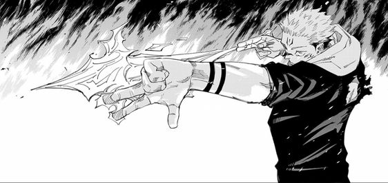
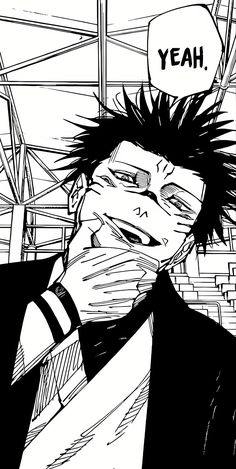
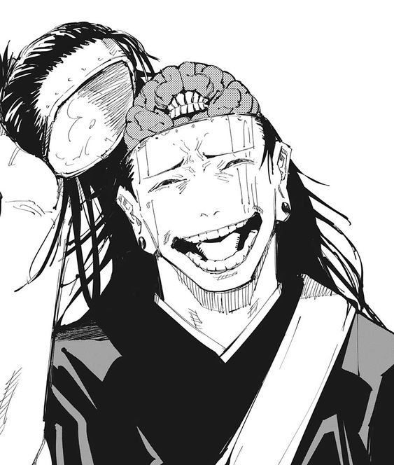
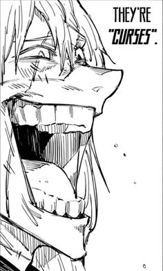
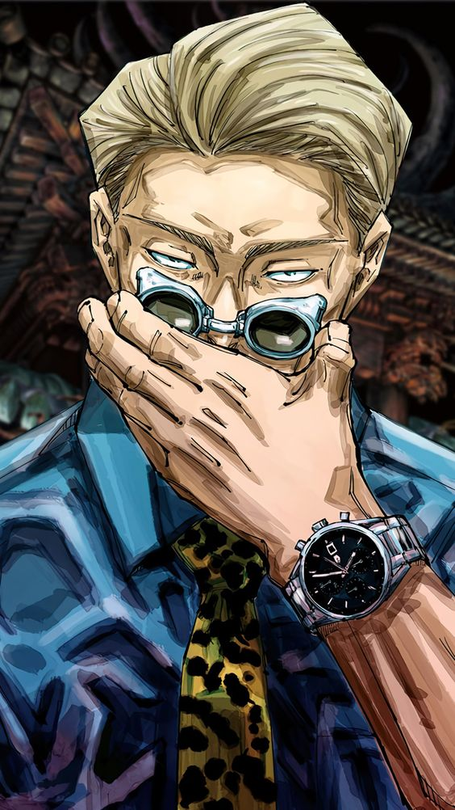
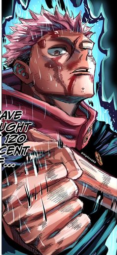
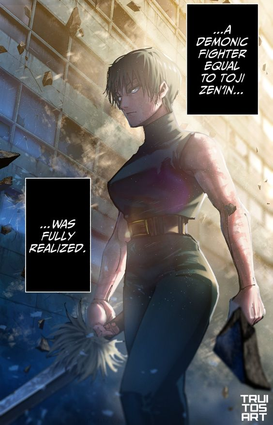

JUJUTU KAISEN
Jujutsu Kaisen é um mangá e anime de ação sobrenatural que segue Yuji Itadori, um estudante que acidentalmente engole um objeto amaldiçoado e ganha poderes ligados a maldições. Ele se junta a um grupo de feiticeiros para combater seres amaldiçoados e proteger a humanidade. A série é conhecida por suas batalhas intensas, personagens carismáticos e uma trama cheia de mistérios envolvendo o mundo das maldições.
Vilões
Jujutsu Kaisen apresenta uma gama diversa de vilões, cada um com motivações, personalidades e poderes únicos. Esses antagonistas variam de maldições poderosas com ódio profundo pela humanidade a feiticeiros renegados que questionam as normas do mundo jujutsu. Suas habilidades sobrenaturais criam confrontos emocionantes e complexos com os protagonistas, elevando o nível das batalhas.
Sukuna
Kenjaku
Mahito
Feiticeiros jujutsu
Feiticeiros Jujutsu são indivíduos treinados para manipular e utilizar energia amaldiçoada, uma força negativa que emana de sentimentos humanos como ódio e medo. Ao contrário das maldições, que são formadas por essa energia, os feiticeiros a dominam e moldam para desenvolver suas próprias técnicas de combate.
Nanami (O maior)
Yuji Itadori
Maki
O feiticeiro mais forte
Satoru Gojo é carismático, confiante e irreverente, frequentemente demonstrando uma atitude despreocupada e brincalhona. Apesar disso, ele é extremamente inteligente e sério em batalha. Gojo é o feiticeiro mais forte devido à sua habilidade de controlar o "Infinito", uma técnica que manipula o espaço, permitindo que ele evite ataques e cause danos devastadores. Seu poder inclui a "Técnica de Expansão de Domínio" e o "Seis Olhos", que amplificam sua percepção e controle de energia amaldiçoada, tornando-o praticamente invencível.

Expansão de domínio
A Expansão de Domínio é uma técnica avançada usada por feiticeiros e maldições em Jujutsu Kaisen. Ao expandir sua energia amaldiçoada, o usuário cria um espaço fechado onde suas habilidades são aprimoradas ao máximo. Dentro do domínio, o oponente é forçado a seguir as regras do usuário, tornando os ataques quase impossíveis de evitar. Cada domínio é único, refletindo as habilidades do usuário.